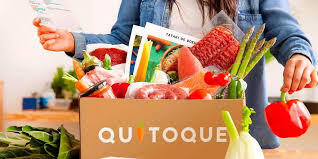
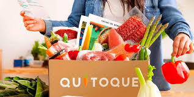
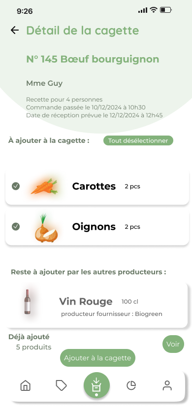
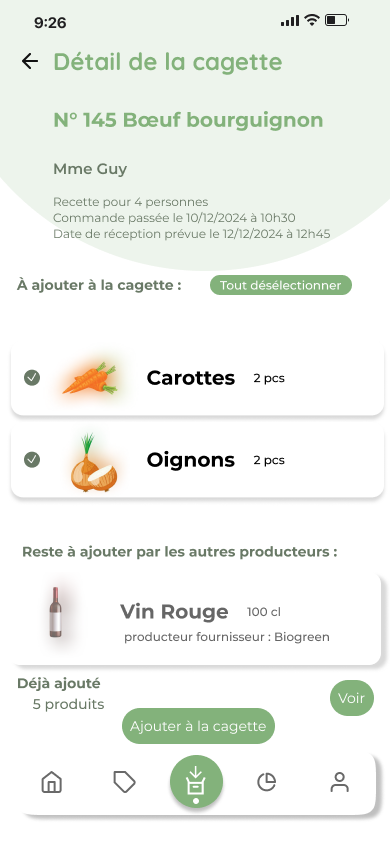

Les petits producteurs agricoles ont souvent confrontés à des déficits budgétaires importants. Pour lutter contre cette situation, il est essentiel de soutenir ces producteurs afin qu'ils puissent augmenter leurs revenus, améliorer leurs conditions de vie et participer à la construction de systèmes alimentaires durables. Cela contribue non seulement à renforcer la sécurité alimentaire, mais aussi à atteindre l'objectif global de la lutte contre la faim. Malheureusement, ces producteurs font face à une préoccupation majeure, à savoir des excédents de production sans réussir à en tirer des bénéfices.
Comment aider Thomas, un petit producteur de légumes, à mieux gérer ses stocks pour assurer des ventes régulières et rentables sans perte ?
Avant de créer notre application La Cagette, nous avons réalisé un benchmark en nous inspirant des sites HelloFresh et Quitoque car :

 

En suivant ces exemples, nous avons conçu La Cagette pour offrir une expérience utilisateur intuitive, esthétique et engageante.

Comme chaque matin, Thomas vérifie la qualité de ses produits, lorsqu’il reçoit une notification sur son téléphone.

C’est une représentation schématique de la structure et des fonctionnalités d’une application mobile ou d’un site web. Dessinées sur papier ou de manière numérique, ces maquettes offrent un degré d’interactivité variable, jouant un rôle essentiel dans la conception d’interfaces.

Pour arriver au résultat final de notre application, nous avons procédés à un round-robin,ainsi qu'à un brain storming. Ce qui nous a permis de mettre en commun toutes les idées auxquelles nous avons pensés,et c'est de cette manière que nous nous sommes dirigés vers le résultat final de notre application.


Suite aux avis des personnes que l'on a interrogé sur le déroulé et l'esthétique de notre application, voici les modifications que nous avons apportées
.png)
.jpg)
 



Dans un futur certain et suivant la levée de fonds, nous aimerions y ajouter quelques fonctionnalités supplémentaires, telles que :